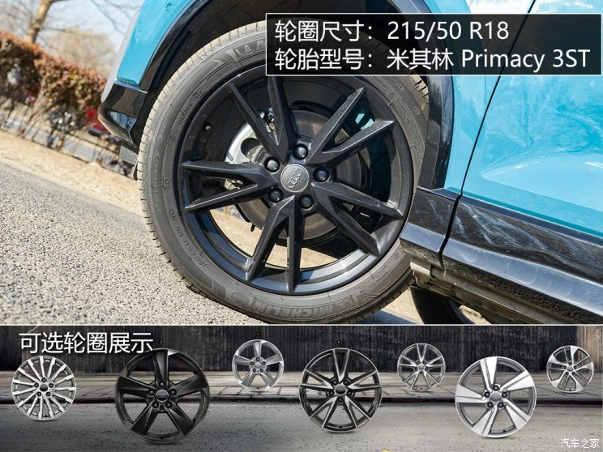
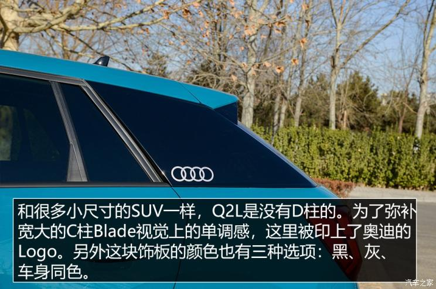
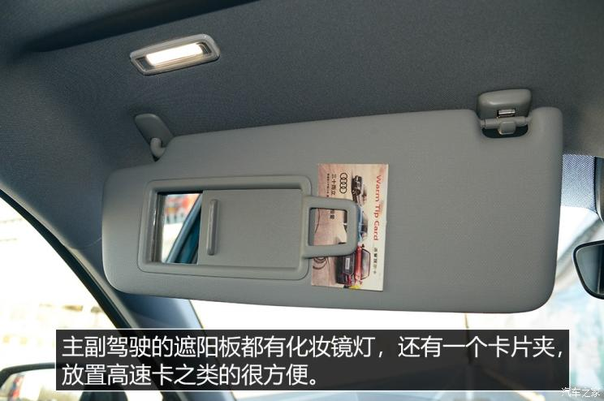
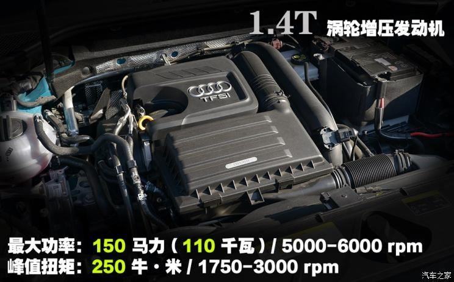
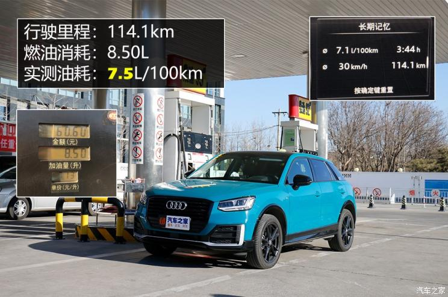
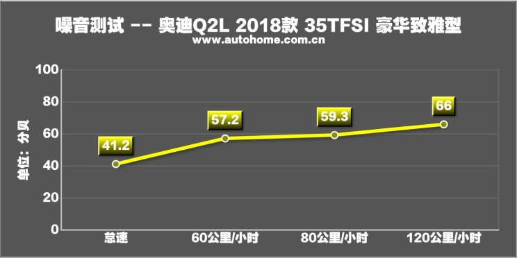

年轻的旋律 测试一汽-大众奥迪Q2L
汽车之家 2019-01-03奥迪Q2L是一款在设计上尽可能向个性化、年轻化靠拢的车。丰富的配色、多样化的定制方案以及小巧玲珑的造型都是吸引年轻消费者的重要特质。在驾驶层面，灵活的车身、出色的刹车成绩和合理的油耗都是能够令人满意的。无论如何，奥迪这一次以一个传统豪华品牌的身份切入年轻化市场，将自己的模块化理念与个性化主题完美结合。Q2L拥有了品牌的口碑光环，也就成为了该细分市场不容忽视的一员。

● 外观设计：多种个性化方案主导
非常巧合，我本人是个正儿八经的“95后”，当听说我要执行全新一汽-大众奥迪Q2L（下文简称Q2L）的测试选题时，内心不禁泛滥一丝欣喜。倒不是因为它是我朝思暮想的Dream Car，而是无论站在汽车编辑抑或是一个车迷的角度，我的身份和视角都与Q2L的目标用户群体高度契合。翻看着官网上的车型手册，那有着强烈视觉冲击的色彩风格似乎在对我说：
“嗨，咱们是一伙的。”
（注：由于本次奥迪提供给我们的车辆属于直接从生产线上选装的功能车，所以在具体配置上与实际在售的车型并不能完全对应。这方面的信息请参考品牌官网或汽车之家产品库。）
外观方面，Q2L提供了多达十种颜色可选（上图中车辆本身也算一种），外观套件分为两种，我们这台试驾车装备的是带S line徽标的动感型运动套件。除此之外，另有一种以镀铬和银色装饰为主的致雅型套件。需要注意的是，如果您选择标准配备与试驾车最为接近的豪华致雅型，那么标配的套件将是后者。

由于其定位缘故，除去一个较为边缘化的英菲尼迪ESQ以外，奥迪Q2L在国内并没有一个门当户对的直接竞争对手。所以在尺寸对比环节我们选择了几个与其价格相仿的紧凑型SUV作参考。国产的Q2L比海外版车型长了些许，但是尺寸依然不能够跨级竞争。甚至可以说Q2L的尺寸放在今天的大环境下是相当袖珍的，起码比我同事马亦骁前几日测试的MINI COUNTRYMAN 还要“Mini”一些。车轮方面，我们这一台车搭配的是18英寸轮圈+米其林 Primacy 3ST轮胎。这个轮胎后面会详细讲。

整体来讲Q2L的外观是我对整车最赞赏的环节之一。除去比较成功的外观造型以外，针对细节装饰的多样化也是亮点之一。如果你对标准配置不满意的话，还可以通过官网对Q2L进行专属个性化定制。从目前了解到的信息来看，奥迪提供多达27款装备的任意搭配，相关配置限量五折优惠，并承诺最快八周可交付车辆。
汽车之家原创内容用户阅读习惯有奖调查
内饰/配置
● 内饰：熟悉的配方，不熟悉的味道

内饰设计部分，很遗憾没能逃脱模块化的“魔咒”。各种设计元素都和A3如出一辙。作为一款入门的主打个性化的产品，奥迪还是为它注入了不同的活力，比如这个精致且漂亮的饰条，每次开车下公司地库时我都禁不住多看两眼。说它入门，是因为它在内饰部分还是体现了一些定位上的差距，例如中控屏幕并不能够收折隐藏。
● 配置：花哨的有很多，但都需要选装
或许奥迪是要将个性化定制的理念在Q2L上充分贯彻，我们这台试驾车上配备了许多全系都需要选装的配置。我承认它们的加入使得Q2L变得更加吸引人，但作为年轻的我们，还要问一下自己的钱包同不同意啊。另外值得一提的是，Q2L的目标用户里会有很多女性消费者，所以我认为倒车影像和座椅加热（2000元）两个实用配置设定为全系选装有些不妥。厂商可以在下一个年代款考虑将这两个配置下放，哪怕指导价格上涨一点都是合理的
空间/乘坐体验
● 空间/乘坐体验：满足日常基本需求，但别奢求太多
空间体验部分我们找来了180cm身高的体验者。从实际结果和测量数据来看，Q2L的前排空间是没有什么问题的，经过加长后的后排空间也只是“够用，不拥挤”的水平。毕竟它是一款小型SUV。当然了，后排乘坐三个成年人这种事情确实有点难为它了。
Q2L在内饰材料上符合一个豪华品牌的入门水准。中控和门板处使用软搪塑工艺的表面不算很多，部分地方有皮革包覆。细节装配工艺没有什么可挑剔的地方，在上文部分我们也提到了奥迪特有的那种段落感极强的按钮阻尼。令人比较满意的是前排运动座椅的造型，这个座椅可以对身体形成较好承托。至于后排座椅的舒适度则不是它的强项。
储物空间/后备厢
● 天窗/储物空间

Q2L的储物空间数量非常丰富。除了常规的杯架、扶手箱、门板等位置以外，它还拥有遮阳板卡片夹等零碎储物空间。前排杯架处还很巧妙地设计了一个放钥匙和硬币的位置。然而，扶手箱的空间确实非常有限。一般的550mL矿泉水瓶是完全塞不下的，只能放一个350mL的小水瓶，外加一个手机。
● 后备厢
后备厢形状规整，里面的扩展功能非常丰富，比较细致。后排座椅支持40：20：40比例放倒，这个是全系标配的。从数据上看后备厢的容积表现一般，只有347L，接下来我们要用行李箱作道具进行实际装载能力展示：
结果印证了我的想法，受级别和尺寸所限，Q2L在不放倒后排的情况下最多只能容纳两个小一点的行李箱。结合前面的空间体验，我们认为Q2L相对更加适合2-3口之家使用。它前排座椅舒适度较好，后排差强人意，后备厢空间一般但是扩展性能出色。
驾驶感受/性能测试
● 驾驶感受：动力充足

奥迪Q2L搭载的依然是那套大家已经非常熟悉的EA211 1.4T高功率发动机和7速双离合器变速箱。全系目前仅有这一款动力搭配，代号为35TFSI。
这台车刚上手的第一感觉比较沉稳，并没有因为外观上的些许浮夸就变得十分躁动。最大150匹的马力推动这台小车刚刚好，当车辆行驶在畅通的环路与高速路况下，不需要刻意踩太深的油门，就可以轻松获得你想要的那种开车节奏。
说到双离合器变速箱，一个绕不开的话题就是平顺性。为此我特意体验了两种它最不擅长的工况：长时间低速跟车和倒车入库。可以说在这两种工况下这台变速箱的平顺性是相当不错的，离合器结合非常自然，挡位切换也不太容易察觉。为了避免顿挫和提高燃油经济性，在低速行驶时这台变速箱会非常早的挂入二挡。但这样会使得车辆在日常驾驶时起步扭矩偏弱，主观感觉动力来的比较慢。
● 加速测试
加速测试环节，制约奥迪Q2L的最大因素就是变速箱。受其控制程序所限，Q2L完全不支持弹射起步，所以起步姿态也就非常稳定了。最终0-100km/h加速成绩8.33秒，属于意料之中的表现。毕竟这台高功率EA211出色的动力性已经过无数次验证了。测试当天气温很低，对涡轮增压发动机有利好。

油耗测试的环节自然没有什么悬念。即便是拥有同级别（小型SUV）最强的动力之一，它的油耗也能控制在推荐值以内。除了动力总成较高的效率以外，ECO模式下的变速箱滑行模式也为如此成绩贡献些许。
行驶与操控
● 行驶与操控：久违的小巧与灵活
奥迪Q2L的行驶表现兑现了一定的豪华感与高档感。在环路行驶经过一些沟坎时，悬架系统的滤振非常干脆。需要指出的是，与海外版本高低有别的后悬架结构不同，国产的Q2L全系采用四轮独立悬架，其前后滤振表现的一致性做的比较好。
得益于车身尺寸较小和比较紧致的悬架设定，开着Q2L在车流间穿梭是一件得心应手的事情。偏向温和的油门调教和乐于升高挡位的变速箱又时刻提醒着你不要危险驾驶，它只是一辆小型SUV。这种灵动而不躁动的感觉，或许是Q2L行驶起来最恰如其分的地方了吧。
此外奥迪在Q2L的部分车型上还加入了渐进式转向系统和驾驶模式选择。我认为这是两项能够提升驾驶员参与感的配置。不要指望他能给你带来多么强的驾驶乐趣，事实上也很少会有人那么激烈地去开这台车。享受其中多样化的可玩性才是主要。
在主动安全配置层面，试驾车的配备也十分丰富。自适应巡航系统在30km/h以上便可进入工作，车道保持系统则在65km/h以上启动，可以对转向进行主动干预。另外在仪表盘的驾驶辅助菜单下，还可根据当前时速预估出前方车距的行驶时间，如果低于安全时间（车距）会进行警示，必要时会主动刹车。
● 刹车测试
Q2L的刹车成绩非常抢眼。除了制动系统本身犀利外，四条米其林 Primacy 3ST的轮胎也提供了极大帮助。在整个制动过程中，甚至都察觉不到ABS的工作，车辆就稳稳地停住了。10次连续测试后制动系统依然工作良好，没有明显热衰退现象。
● 噪音测试：


Q2L的噪音测试成绩同样优秀。在法定限速内行驶各种环境噪音的抑制都很到位。唯独发动机在加速时噪音有一点大。
● 总结
奥迪Q2L是一款在设计上尽可能向个性化、年轻化靠拢的车。丰富的配色、多样化的定制方案以及小巧玲珑的造型都是吸引年轻消费者的重要特质。在驾驶层面，灵活的车身、出色的刹车成绩和合理的油耗都是能够令人满意的。当然，这辆车并不太适合作为家里的唯一通勤车出现，其使用场景应该是年轻人的专属座驾或者家里的第二三辆车。无论如何，奥迪这一次以一个传统豪华品牌的身份切入年轻化市场，将自己的模块化理念与个性化主题完美结合。Q2L拥有了品牌的口碑光环，也就成为了该细分市场不容忽视的一员。（文/图/摄 汽车之家 蒋易辰）